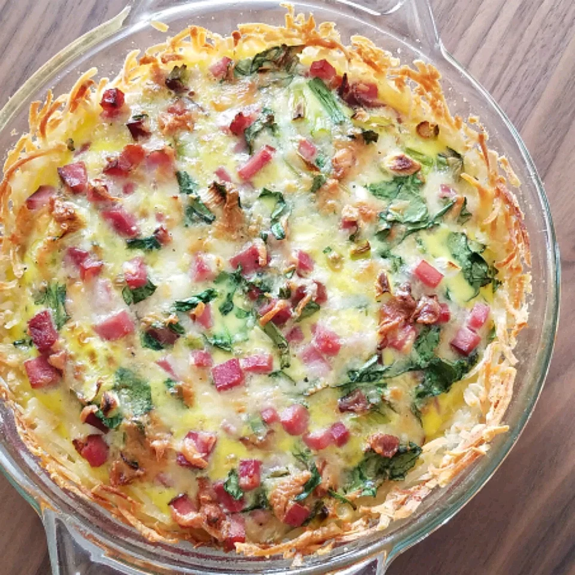

Shredded Potato Quiche

Description
Often over-looked and underrated, quiche is a cornerstone brunch recipe.
But don’t limit this dish to brunch! Quiche is fantastic for lunch,
dinner, Easter supper, baby showers, bridal showers, potlucks, tea
parties, and so much more. It’s my go-to food when I need a quick recipe
that’s delicious, crowd-pleasing, and adaptable to what I have in the
refrigerator.
Quiche is a savory egg custard baked in a flaky pie crust shell. Though
you can certainly make a crustless quiche, too! The base of quiche filling
are milk, cream, and eggs. The add-ins vary and can include meats,
seafood, cheese, spices, and vegetables. One of the more popular quiche
recipes is Quiche Lorraine, which combines bacon and cheese.
Ingredients
- 1 (16 ounce) package frozen shredded hash brown potatoes, thawed
- 1/4 cup butter, melted
- 5 eggs, lightly beaten
- 1 1/2 cups shredded Swiss cheese
- 1 cup cooked ham
- 1/4 cup milk
- salt and pepper to taste
Steps
-
Preheat oven to 375° F (190° C). Lightly grease a 9 inch
pie pan.
-
Press potatoes into greased pie plate. Brush with melted butter. Bake in
preheated oven until lightly browned, about 10 to 15 minutes.
-
In a large bowl, stir together beaten eggs, milk, cheese, ham, salt and
pepper. Pour egg mixture into baked crust.
-
Bake in preheated oven until center is set, about 20 minutes. The quiche
will be browned on top and a knife inserted into the center will come
out clean.
Return